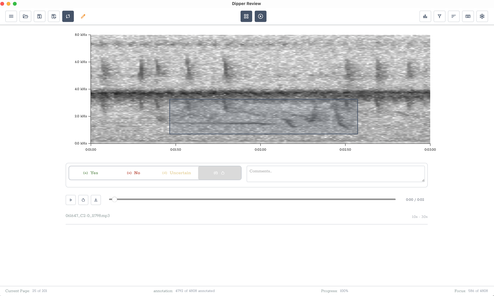

Download
Choose the edition that fits your workflow. Both editions run on macOS (Apple Silicon), Windows (x64), and Linux (x64).
- Binary & multi-class annotation
- Spectrogram + audio playback
- Bounding box annotation
- CGL classifier-guided listening
- ML training / inference
- Everything in Dipper Review
- Model training
- Batch inference
- Clip extraction
- ~700 MB ML environment
(currently available in Server Mode)
Server Mode + Remote Access
To run Dipper on a server and access via a remote browser, see Server Mode instructions
Linux note
Make the AppImage executable: chmod +x Dipper*.AppImage, then run it.
ML environment
The full app downloads its PyTorch environment (~700 MB) automatically on first use.
Screenshots
Annotate efficiently with fluid switching between Grid and Focus layouts and keyboard-based annotation.


Video Tutorials
All Releases
Click any asset to download directly from GitHub Releases.
Loading releases…
About Dipper
Dipper is an open-source desktop application for bioacoustics machine learning workflows.
Annotation
Binary, multi-class, and bounding-box annotation of audio clips with spectrogram visualization.
Inference
Run trained models over large audio datasets and review detections in the built-in reviewer.
Training
Fine-tune or train bioacoustics classifiers using OpenSoundscape and PyTorch.
Cross-platform
Built with Tauri + React. Native desktop experience on macOS, Windows, and Linux.
Bugs and Feature Requests
Report issues or request new features on our GitHub Issues page.